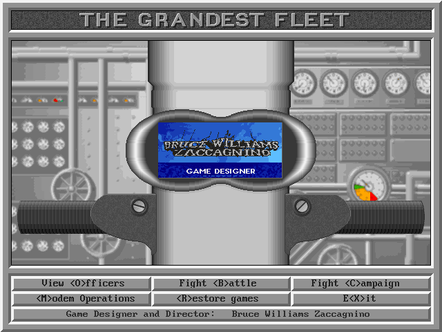
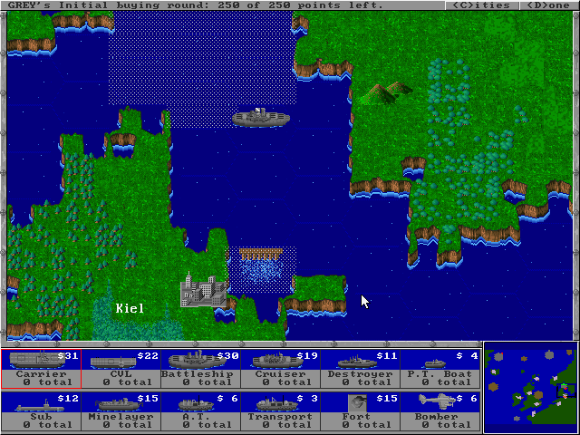

名稱：最偉大的艦隊 (The Grandest Fleet，英文版)
簡介：Fogstone 1993年出品的回合制海戰戰術遊戲，由Quantum Quality Productions代理
發行 [待補]。


備註：本版為光碟版
保護：光碟版為光碟，磁片版為手冊密碼，磁片版破解碼：
0COVER0.OVL
75 73 8D 7E A2
EB -- -- -- --
或
74 18 89 76
EB -- -- --
74 08 80 7A
EB -- -- --
備註：光碟版（1994/6/1版）與磁片版有非常多檔案不同，尚不清楚其差異。
檔案：TGFCDU.rar = 光碟版更新檔（1994/12/13版）
gfleet-disk.rar = 磁片版（1994/5/27版）